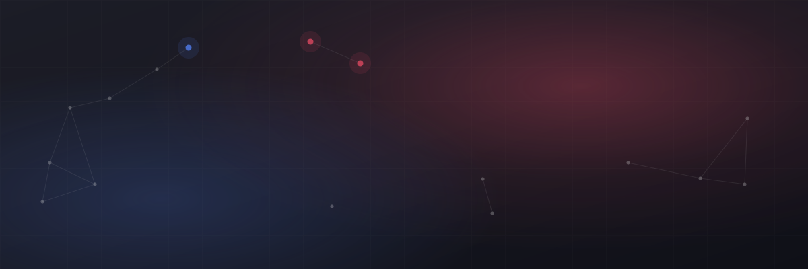
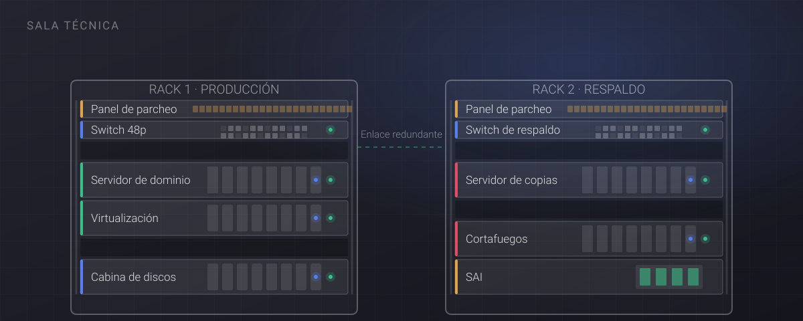

Quiénes somos
Iber-STRategia es una consultora tecnológica con sede en Madrid, especializada en el soporte informático a pequeñas y medianas empresas. Hoy acompañamos a más de cincuenta clientes repartidos por toda España: despachos profesionales, distribuidoras, industria ligera, clínicas y empresas de servicios que tienen en común una cosa: dependen de su informática todos los días y no tienen un departamento propio para ocuparse de ella.
No somos una gran integradora ni pretendemos serlo. Somos el equipo al que se llama cuando hace falta alguien que conozca la empresa, que responda el teléfono y que sepa lo que hay detrás de cada servidor porque lo montó él mismo.
Cómo trabajamos
Nuestra forma de trabajar se puede resumir en tres decisiones que tomamos al empezar y que no hemos cambiado desde entonces.
Primero entender, después proponer. Antes de recomendar nada dedicamos tiempo a ver cómo trabaja la gente de verdad, no cómo dice el manual que debería trabajar. Casi todas las soluciones que fallan son técnicamente correctas y humanamente imposibles.
Un interlocutor, no una centralita. Cada cliente tiene una persona asignada que conoce su instalación, su histórico y sus manías. Cuando llamas no empiezas de cero ni explicas por décima vez cómo se llama tu servidor.
Todo queda documentado y todo es tuyo. Contraseñas, esquemas de red, código fuente y manuales se entregan al cliente. Si algún día decides cambiar de proveedor, podrás hacerlo sin depender de nosotros. Preferimos que te quedes porque quieres, no porque no puedas irte.

En qué creemos
- Independencia. No cobramos comisiones de fabricante, así que podemos recomendar lo que conviene y también decir que no compres nada.
- Claridad. Presupuestos cerrados, plazos realistas y explicaciones en castellano, sin escudarnos en las siglas.
- Continuidad. Nos interesan las relaciones largas. Por eso preferimos hacer bien diez proyectos que empezar cincuenta.
- Personas. Detrás de cada sistema hay gente que tiene que usarlo. Si no lo entienden, el proyecto ha fracasado aunque funcione.
Con quién trabajamos
No somos especialistas en un único sector, y eso es deliberado: la variedad nos obliga a entender el negocio de cada cliente en vez de aplicar una receta. Estos son los perfiles con los que más trabajamos:
- Despachos profesionales y asesorías
- Distribución y logística
- Industria ligera y talleres
- Clínicas y centros sanitarios
- Ingeniería y arquitectura
- Comercio y retail
- Empresas de servicios y consultoría
- Fundaciones y entidades sin ánimo de lucro
Dónde estamos
Nuestra oficina está en la Plaza Carlos Trías Bertrán, 4 (28020 Madrid), en pleno distrito de Tetuán y a pocos minutos de Nuevos Ministerios y Santiago Bernabéu. Desde allí atendemos en remoto a clientes de toda España y nos desplazamos siempre que hace falta estar delante de la máquina.